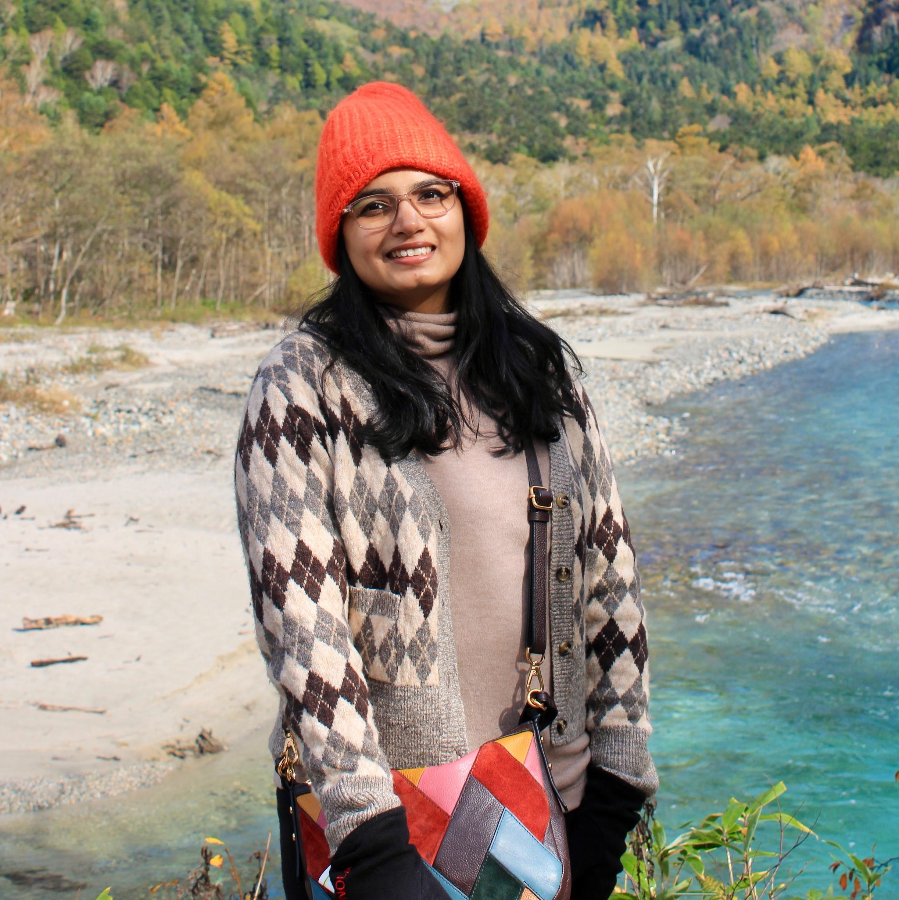

This space is our little corner of the internet — where we document what we see, what we feel, and what quietly changes us along the way.

Our Story
We’ve never really believed in rushing through places. We’ve always been drawn to experiencing places at our own pace.
It’s the in-between moments we find ourselves coming back to the unplanned stops, the conversations that last longer than expected. Somewhere along the way, we realised this is how we want to travel— and live.
Slow enough to notice things, Curious enough to try things, Open enough to be surprised
"We’re not collecting countries. We’re collecting moments — the kind we still talk about months later."
Routes & Reflections — for us, it’s about the journeys we take and the meaning we carry forward. The slow routes, the quiet moments, the meals we still talk about long after we’re back.
Because some experiences feel too meaningful to forget. Because a simple meal in a corner of a city can stay with you longer than any landmark. Because travel, for us, isn’t about ticking boxes— it’s about connection.
Aditi brings the words and an eye for detail. Rajesh brings the camera and the instinct to explore. Together, we’ve found a way of experiencing the world that feels like us. This space grew out of that— a way to hold onto moments that linger, and share them, honestly.
What You'll Find Here
This is a quiet corner of the internet. We write when we have something worth saying, share photographs that feel honest, and never pretend a place is perfect if it isn't.
The places we’ve been— and what they felt like.
From local markets to unexpected meals.
The rhythms we bring back.
Thoughts shaped along the way.
Our Philosophy
We're not chasing a list. We're chasing a feeling — the one you get when a place stops being a destination and starts feeling, briefly, like home. A few things guide how we travel and how we write:
This isn’t just about travel.
A life we enjoy — one trip, one meal, one moment at a time. If this helps you slow down, that’s enough.